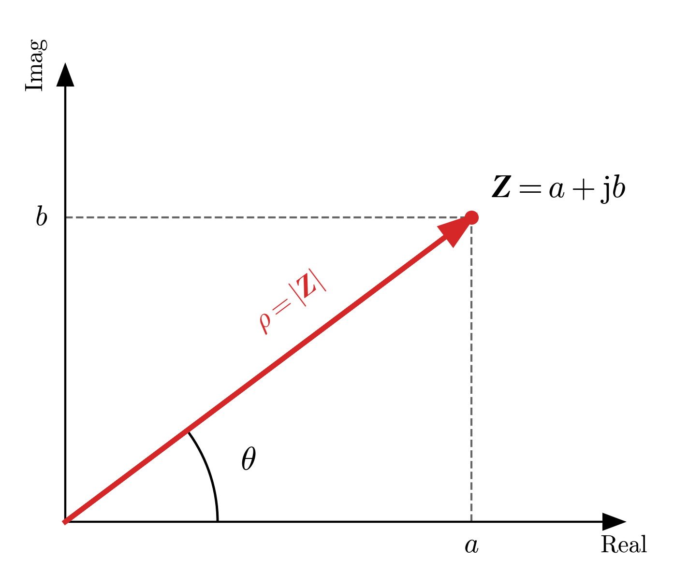

El análisis de circuitos de corriente alterna se simplifica enormemente utilizando números complejos. A continuación, se presenta un resumen de las propiedades y operaciones fundamentales para su consulta rápida.
A.1 Definición y Forma Binómica
Un número complejo es una expresión de la forma: \[\vec{Z} = a + \mathrm{j} \cdot b\]
Donde:
- \(a\) es la parte real (\(a \in \mathbb{R}\)).
- \(b\) es la parte imaginaria (\(b \in \mathbb{R}\)).
- \(\mathrm{j}\) es la unidad imaginaria, definida como \(\mathrm{j} = \sqrt{-1}\).
Definiciones Básicas
- Igualdad: Dos números complejos \(\vec{Z} = a + \mathrm{j}b\) y \(\vec{W} = c + \mathrm{j}d\) son iguales si sus partes reales e imaginarias coinciden (\(a=c\) y \(b=d\)).
- Conjugado: El conjugado de un número \(\vec{Z}\), denotado como \(\vec{Z}^*\), es aquel que tiene la misma parte real y la parte imaginaria opuesta (\(\vec{Z}^* = a - \mathrm{j} \cdot b\)).
- Producto por el conjugado: Al multiplicar un número complejo por su conjugado, se obtiene siempre un número real. \[\vec{Z} \cdot \vec{Z}^* = a^2 + b^2\] Esta propiedad es fundamental para eliminar la “j” de los denominadores al dividir.
A.2 Operaciones en Forma Binómica
Dados dos números complejos \(\vec{Z} = a + \mathrm{j}b\) y \(\vec{W} = c + \mathrm{j}d\):
Suma y Resta: Se suman (o restan) las partes reales entre sí y las imaginarias entre sí. \[\vec{Z} \pm \vec{W} = (a \pm c) + \mathrm{j}(b \pm d)\]
Producto: Se aplica la propiedad distributiva, recordando que \(\mathrm{j}^2 = -1\). \[\vec{Z} \cdot \vec{W} = (ac - bd) + \mathrm{j}(ad + bc)\]
División: Se multiplica numerador y denominador por el conjugado del denominador para eliminar la parte imaginaria de abajo. \[\frac{\vec{Z}}{\vec{W}} = \frac{ac+bd}{c^2+d^2} + \mathrm{j} \frac{bc-ad}{c^2+d^2}\]
A.3 Representación Gráfica y Forma Polar
Los números complejos se representan en el plano complejo (diagrama de Argand), donde el eje horizontal es la parte real y el vertical la imaginaria.

A partir de la gráfica, definimos la forma polar mediante el módulo (\(|\vec{Z}|\) o \(\rho\)) y el argumento (\(\theta\)):
\[\vec{Z} = \rho \angle \theta\]
A.3.1 Conversión entre formas
De Binómica a Polar: \[ \begin{aligned} \rho &= |\vec{Z}| = \sqrt{a^2 + b^2} \\ \theta &= \arctan\left(\frac{b}{a}\right) \end{aligned} \]
De Polar a Binómica: \[ \begin{aligned} a &= \rho \cdot \cos \theta \\ b &= \rho \cdot {\operatorname{sen}} \theta \end{aligned} \]
A.4 Operaciones en Forma Polar
La forma polar es mucho más eficiente para realizar multiplicaciones y divisiones. Dados dos números \(\vec{Z} = \rho \angle \theta\) y \(\vec{W} = \sigma \angle \delta\):
Producto: Se multiplican los módulos y se suman los argumentos. \[\vec{Z} \cdot \vec{W} = (\rho \cdot \sigma) \angle (\theta + \delta)\]
División: Se dividen los módulos y se restan los argumentos. \[\frac{\vec{Z}}{\vec{W}} = \left( \frac{\rho}{\sigma} \right) \angle (\theta - \delta)\]
Conjugado: El conjugado en polar mantiene el módulo y cambia el signo del ángulo. \[\vec{Z}^* = \rho \angle (-\theta)\]
💡 Regla de Oro para el Cálculo en CA
Para optimizar el trabajo y evitar errores al resolver circuitos, sigue siempre este criterio:
- Para Sumas y Restas: Utiliza obligatoriamente la Forma Binómica (\(\vec{Z} = a + \mathrm{j}b\)).
- Intentar sumar en polar es un error muy común y matemáticamente incorrecto sin pasar antes a binómica.
- Para Multiplicaciones y Divisiones: Utiliza preferiblemente la Forma Polar (\(\vec{Z} = \rho \angle \theta\)).
- Es mucho más rápido y menos propenso a errores multiplicar módulos y sumar ángulos que hacer la distributiva con las “j”.
A.5 Guía Rápida de Uso de la Calculadora
Aunque cada modelo es diferente, la mayoría de calculadoras científicas estándar siguen una lógica similar para trabajar con números complejos.
A.5.1 Configuración Inicial
Antes de empezar a operar, asegúrate de dos cosas fundamentales:
- Activa el Modo Complejo: Busca la tecla
MODEoSETUPy selecciona la opción CMPLX (o Complex).- Sabrás que está activo si ves un indicador “CPLX” o “CMPLX” en la pantalla.
- Verifica los Grados: Asegúrate de que la calculadora está en Degrees (D) (Grados sexagesimales) y no en Radianes (R) o Gradianes (G).
- Si ves una “R” en la pantalla, tus resultados angulares saldrán mal.
A.5.2 Cómo escribir los números
Ten en cuenta que las calculadoras usan la notación matemática estándar (\(i\)) en lugar de la notación eléctrica (\(\mathrm{j}\)).
- La unidad imaginaria (\(i\)): Suele estar en la tecla
ENG. En la mayoría de modelos no hace falta pulsar Shift antes.- Ejemplo para escribir \(3 + \mathrm{j}4\): Teclea
3+4i.
- Ejemplo para escribir \(3 + \mathrm{j}4\): Teclea
- El símbolo de ángulo (\(\angle\)): Para introducir formas polares, busca el símbolo \(\angle\) (suele estar sobre la tecla
(-)ovy requiere pulsarSHIFT).- Ejemplo para escribir \(10 \angle 30^\circ\): Teclea
10SHIFT\angle30.
- Ejemplo para escribir \(10 \angle 30^\circ\): Teclea
A.5.3 Conversión entre formas (Paso a paso)
El error más común es no saber cómo pasar un resultado de binómica a polar o viceversa.
Truco: El menú de conversión
Casi todas las operaciones de conversión se esconden tras una de estas dos teclas, dependiendo de la antigüedad de tu calculadora:
- Modelos Clásicos: Pulsa
SHIFT+2(encima suele poner CMPLX en amarillo). - Modelos Modernos (Classwiz): Pulsa la tecla
OPTN(Option).
Para pasar a Polar (\(r \angle \theta\)):
- Introduce el número o ten el resultado en pantalla (ej: \(3+4i\)).
- Abre el menú de conversión (
SHIFT+2oOPTN). - Selecciona la opción que se parece a \(\rhd r\angle\theta\).
- Pulsa
=
Para pasar a Binómica (\(a+bi\)):
- Introduce el número o ten el resultado en pantalla (ej: \(5\angle 53.13\)).
- Abre el menú de conversión.
- Selecciona la opción que se parece a \(\rhd a+bi\).
- Pulsa
=